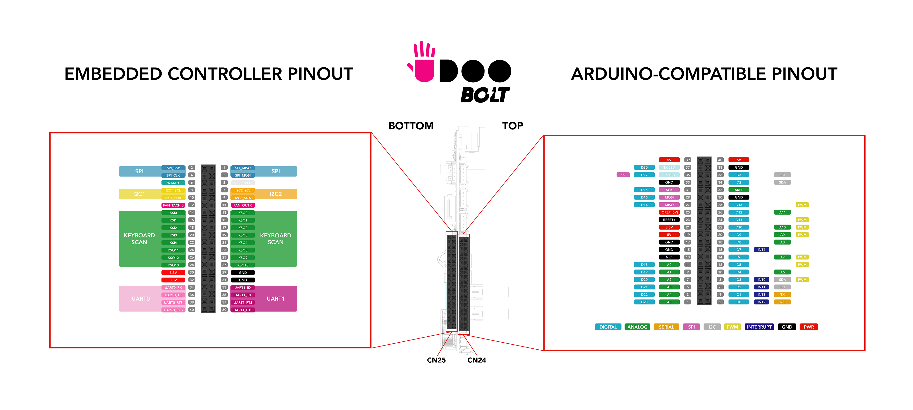

Pinout Headers
UDOO BOLT features two pinout headers (dual-row 40 Pins), one on the top(CN24) and another on the bottom(CN25) of the board.
- CN24 - Top: The pin header connector on the top of the board is connected to the ATmega32U4 microcontroller (Arduino® Leonardo-compatible). Check the Arduino Leonardo-compatible(ATmega32U4) Pinout section to know how to use it through the Arduino® programming.
- CN25 - Bottom: The pin header connector on the bottom of the board is connected to the Embedded Controller(MEC1705). The EC is used to manage some functionalities of the board like the fan management, the wake up of the Ryzen™ processor and others. The EC also manages the exposed buses in the CN25 pinout header like UART, I2C, etc. and these are usable from the main AMD Ryzen™ processor.
_
Since the Arduino Pinout connector (CN24) is fully described in the dedicated section, we describe only the pinout header of the EC (CN25) in this page.
Embedded Controller I/O Pin header - CN25
The Embedded Controller input/output (I/O) pins operate at 3.3V.
⚠️ Warning: UDOO BOLT Pins controlled by the Embedded Controller are 3.3V compliant. Providing higher voltages, like 5V or 12V, could irreversibly damage the board. In order to properly work with an input voltage different from 3.3V you can use a bidirectional level shifter.
Pinmuxing
The image below shows the list of all possible functions assigned to each Pin.
 _
_
Here you can find the Embedded Controller [Microchip MEC1705 datasheet](http://ww1.microchip.com/downloads/en/DeviceDoc/MEC170x-Data-Sheet-DS00002206D.pdf).
UART 0 and UART 1
Universal Asynchronous Receiver/Transmitter (UART) provides serial communication capability with external devices.
The UART 0 is available at Pins 34, 36, 38, 40.
The UART 1 is available at Pins 33, 35, 37, 39.
UART 0
| Pin | Function | EC PAD |
|---|---|---|
| 34 | UART0_RX | UART0_RX |
| 36 | UART0_TX | UART0_TX |
| 38 | UART0_RTS | UART0_RTS# |
| 40 | UART0_CTS | UART0_CTS# |
UART 1
| Pin | Function | EC PAD |
|---|---|---|
| 33 | UART1_RX | UART1_RX |
| 35 | UART1_TX | UART1_TX |
| 37 | UART1_RTS | UART1_RTS# |
| 39 | UART1_CTS | UART1_CTS# |
Accordingly to the Microchip MEC1705 datasheet these are full-function Serial Port that supports the standard RS-232 Interface. The baud rate goes from 50 to 3000000.
The UARTs are directly propagated to the OS as Legacy UART so you can already interact with they.
UARTs on Linux
On Linux the UARTs are seen as standard tty devices. The addresses are set by default to 0x3f8 and 0x2f8.
You should find the UARTs available on the devices /dev/ttyS0 and /dev/ttyS1 on Ubuntu with a baudrate of 115200.
The device name assigned by the Linux Distro you are using can change, you can check the name assigned running the command:
dmesg | grep tty
UARTs on Windows 10
On Windows the UARTs are seen as standard COM devices. The addresses are set by default to 0x3f8 and 0x2f8.
You should find the UARTs available on the devices COM1 and COM2 on Windows 10.
I2C 1 and I2C 2
The I2C (Inter-IC) bus is a bi-directional, two-wire serial bus that provides a communication link between integrated circuits (ICs). Phillips introduced the I2C bus 20 years ago for mass-produced items such as televisions, VCRs, and audio equipment. Today, I2C is the de-facto solution for embedded applications.
The I2C 1 is available at Pins 8, 10.
The I2C 2 is available at Pins 7, 9.
I2C 1
| Pin | Function | EC PAD |
|---|---|---|
| 8 | I2C1_SCL | I2C08_SCL |
| 10 | I2C1_SDA | I2C08_SDA |
I2C 2
| Pin | Function | EC PAD |
|---|---|---|
| 7 | I2C2_SCL | I2C09_SCL |
| 9 | I2C2_SDA | I2C09_SCL |
Check the Microchip MEC1705 datasheet for more info about the I2C interface.
You can use the I2C exposed by the EC using the EAPI libraries in your software.
SPI
The Serial Peripheral Interface (SPI) is a synchronous serial communication interface specification used for short-distance communication, primarily in embedded systems.
The SPI may be accurately described as a synchronous serial interface, but it is different from the Synchronous Serial Interface (SSI) protocol, which is also a four-wire synchronous serial communication protocol.
The SPI is available at Pins 1, 2, 3, 4.
| Pin | Function | EC PAD |
|---|---|---|
| 1 | SPI_MISO | SPI0_MISO |
| 2 | SPI_CS# | SPI0_CS# |
| 3 | SPI_MOSI | SPI0_MOSI |
| 4 | SPI_CLK | SPI0_CLK |
You can use the SPI exposed by the EC using the EAPI libraries in your software.
Fan Controller
You can control an external Fan using the Fan Controller Pins.
The Fan controller is available at Pins 11, 12.
| Pin | Function | EC PAD |
|---|---|---|
| 11 | FANOUT0 | PWM0 |
| 12 | FANTACH0 | FAN_TACH0 |
The Fan Out is used as a PWM output to control the Fan Speed.
The Fan Tachometer is used as in Input to capture the Fan Speed.
Remember you also need to provide the Voltage and Ground Pins to the external Fan.
These two signals (out and tachometer) are only 3.3V digital pins exposed by the controller and therefore do not deliver power.
To drive a 3-pin fan you need a power circuit that gives the right voltage to the fan. For example, this is the circuit used to drive the 5V fan installed above the heatsink:
You can control these Fan Pins using the EAPI libraries in your software.
Wake Pins
The Wake pin can be used as an interrupt, the signal is caught by the EC and propagated to wake up the main AMD Ryzen™ processor from S3/S4/S5 status (Suspend/Hibernate/Power Off).
The Wake is available at Pin 6.
| Pin | Function | EC PAD |
|---|---|---|
| 6 | WAKE# | GPIO025 |
The wake signal is activated by a logical state change on the Pin (e.g. active low from 3.3V to GND).
Keyboard Scan
The Keyboard Scan Interface block provides a register interface to the EC to directly scan an external keyboard matrix of size up to 11x5.
- KS Input [4:0] : Column inputs from external keyboard matrix.
- KS Output[10:0]: Row outputs to external keyboard matrix.
The Keyboard Scan is available at Pins from 13 to 28.
| Pin | Function | EC PAD |
|---|---|---|
| 13 | KSO0 | KSO00 |
| 14 | KSI0 | KSI0 |
| 15 | KSO1 | KSO01 |
| 16 | KSI1 | KSI1 |
| 17 | KSO2 | KSO02 |
| 18 | KSI2 | KSI2 |
| 19 | KSO3 | KSO03 |
| 20 | KSI3 | KSI3 |
| 21 | KSO4 | KSO04 |
| 22 | KSI4 | KSI4 |
| 23 | KSO8 | KSO08 |
| 24 | KS11 | KSO11 |
| 25 | KSO9 | KSO09 |
| 26 | KSO12 | KSO12 |
| 27 | KSO10 | KSO10 |
| 28 | KSO13 | KSO13 |
You can use these Pins as GPIO exposed by the EC using the EAPI libraries in your software.